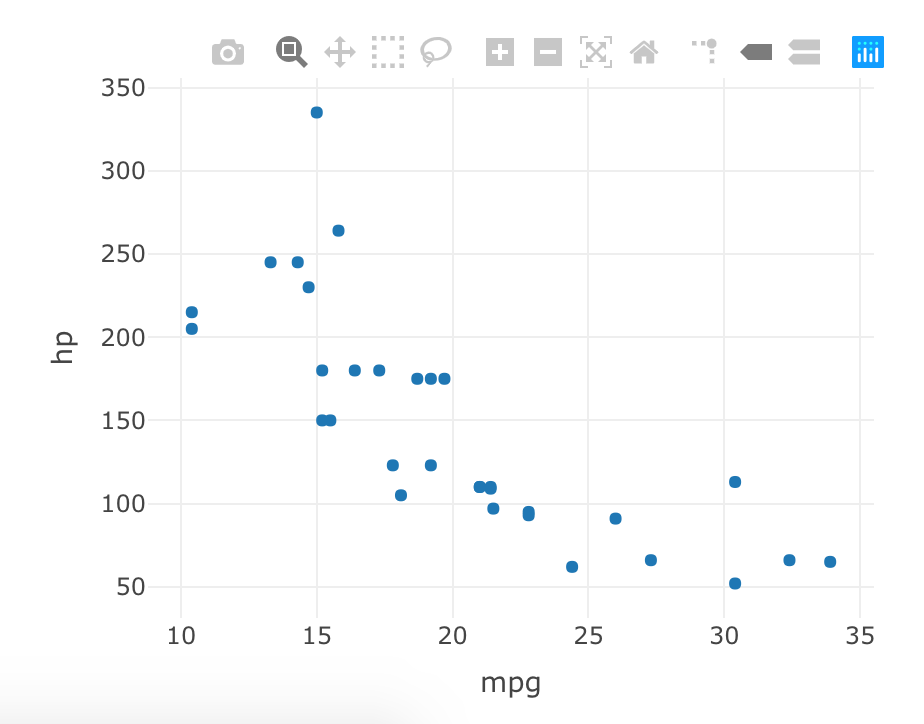
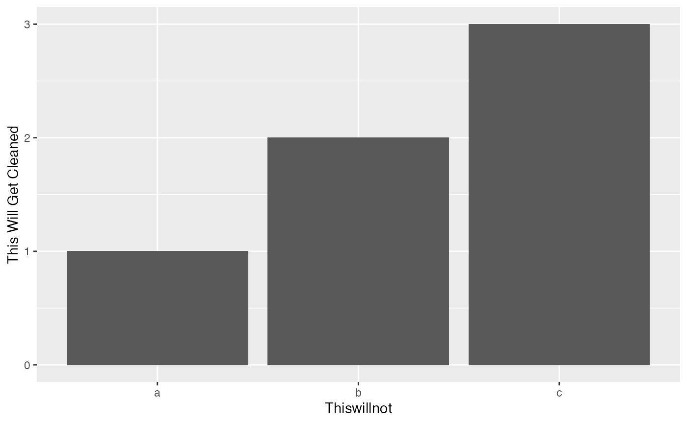

Primarily for Windows users. When copying file paths in Windows it will use a backslash to separate files, this will throw an error in R. The process of manually changing the backslashes to forward slashes can get highly repetitive. The back_to_forward() function will take what is in the user’s clipboard and paste the path with the wanted forward slashes. There are two approaches to this.
Example file path saved in clipboard: C:\Documents\Newsletters\Summer2018.csv
back_to_forward() in the ConsoleRun back_to_forward() in the console. This will output a string with forward slashes.
back_to_forward() to a Hotkeyback_to_forward() is also an add-in called Back to Forward Slash. In RStudio near the top click Addins and you will see the kowr package with the add-in. If you click this add-in it will paste the file path wherever your cursor is located within RStudio. This is not the most ideal way to use this. Since backward_to_forward() is an add-in we can assign the add-in Back to Forward Slash to a hotkey.
Tools > Modify Keyboard Shortcuts... in RStudioBack to Forward Slash
CMD + /
plot_ly() output:
library(plotly)
p <- plot_ly(data = mtcars, x = ~mpg, y = ~hp, type = "scatter", mode = "markers")
p
plotly_object A plotly object.buttons_to_keep A string. Default is NULL. Use a vector of strings for multiple buttons to keep. Below is a list of items with the plotly code that corresponds to the text displayed on the plotly plot when hovering over the buttons.
toImage: Download plot as a pngzoom2d: Zoompan2d: Panselect2d: Box Selectlasso2d: Lasso SelectzoomIn2d: Zoom inzoomOut2d: Zoom outautoScale2d: AutoscaleresetScale2d: Reset axestoggleSpikelines: Toggle Spike LineshoverClosestCartesian: Show closest data on hoverhoverCompareCartesian: Compare data on hoverkeep_logo A logical. Default is FALSE. Set to TRUE to keep the “Produced with Plotly” button located in the top right of the plot.Round whole numbers up. This function will always round up to the number place second to the left:
round_up(x = 123456)
#> [1] 130000Numbers with only 2 numeric places (tens), then it will round on the tens position value:
round_up(x = 19)
#> [1] 20If needed, we can change the value to a dollar amount. Using as_dollar = TRUE will change the numeric value to a character:
round_up(x = 1991, format = "dollar")
#> [1] "$2,000"This is useful for when the user wants to use the columns in a presentation such as reports, plots, or dashboards.
I find myself using stringr::str_to_title() for a clean way of presenting columns in documents and dashboards. This is the reason the default argument for snake_to()’s output is “title”. This will only work with snake case (my preferred naming syntax). If you use snake_to() on camelCase then it will capitalize it as if it was one word.
dat <- tibble(
this_will_get_cleaned = c(1, 2, 3),
thisWillNot = c("a", "b", "c"),
cleans_snake_only = c("q", "w", "e"),
notCamcel = c(10, 12, 14)
)
dat %>%
snake_to()
#> # A tibble: 3 x 4
#> `This Will Get Cleaned` Thiswillnot `Cleans Snake Only` Notcamcel
#> <dbl> <chr> <chr> <dbl>
#> 1 1 a q 10
#> 2 2 b w 12
#> 3 3 c e 14
dat %>%
snake_to(format = "sentence")
#> # A tibble: 3 x 4
#> `This will get cleaned` Thiswillnot `Cleans snake only` Notcamcel
#> <dbl> <chr> <chr> <dbl>
#> 1 1 a q 10
#> 2 2 b w 12
#> 3 3 c e 14
dat %>%
snake_to(names_only = TRUE)
#> [1] "This Will Get Cleaned" "Thiswillnot" "Cleans Snake Only"
#> [4] "Notcamcel"snake_to() will also clean up ggplot x and y axes. Pipe the saved ggplot object into snake_to() and it will clean up snake case titles. If there is a legend the title will be capitalized using str_to_title().
library(ggplot2)
p <- dat %>%
ggplot(aes(x = thisWillNot, y = this_will_get_cleaned)) +
geom_col()
p
p %>% snake_to()
object A data.frame, ggplot or character vector. A data.frame will have transformed column names. A ggplot object will have transformed X and Y axes.format A string. The desired target (default is “title”) case with options including:
"title" produces title case"lower" produces lower case"normal" do not transform the string"sentence" produces sentence case"upper" produces upper caseacronyms A Character. Default NULL. For when acronyms exist in the column names that need to be capitalized. Pass a character vector for when there is more than one acronym. Upper and/or lower case acronyms in this parameter will be accepted. This will only capitalize the wanted words, words that may contain the acronyms letter will NOT be capitalized.names_only A Logical. Default FALSE. If TRUE, snake_to() will return a vector of transformed column names.